무선침묵 이야기 (9) - 연합군에는 신기술이, 독일해군에는 대응책이 있다
게시: 2024-09-19T06:30:50+09:00
<난민을 우대하면 자다가도 떡이 생긴다> 허프더프를 군함에 설치할 수 있게 결정적인 개선 사항을 만들어낸 사람은 바로 동쪽에서 흘러들어온 난민. 1904년 생인 폴란드인 바츠워프 스트루신스키(Wacław Struszyński)는 바르샤바 공대에서 석사학위까지만 마치고 폴란드 국영 통신사에서 방향 탐지 기술부에서 일하던 전기공학자. 1939년 나찌 독일이 폴란드를 침공하자 어렵게 탈출하여 1940년 영국에 도착. 실은 개인 자격으로 알아서 피난길에 나선 것은 아니었고 국영 기업에서 당시 첨단 기술이던 전파 공학을 하던 기술자라고 영국에 의해 소개된 것. 참고로 스트루신스키의 아버지는 아들보다 더 가방끈이 긴 사람으로서, 화학 박사이자 바르샤바 공대 교수였는데 영국에서 화학자는 별로 쓸모가 없었는지 소개시켜주지 않아 나찌 독일 치하에 남아야 했음. 스트루신스키의 아버지는 폴란드 레지스탕스와 협업하여 독일 V2 로켓 연료에 어떤 원료를 쓰는지 분석하는 일을 했다고.
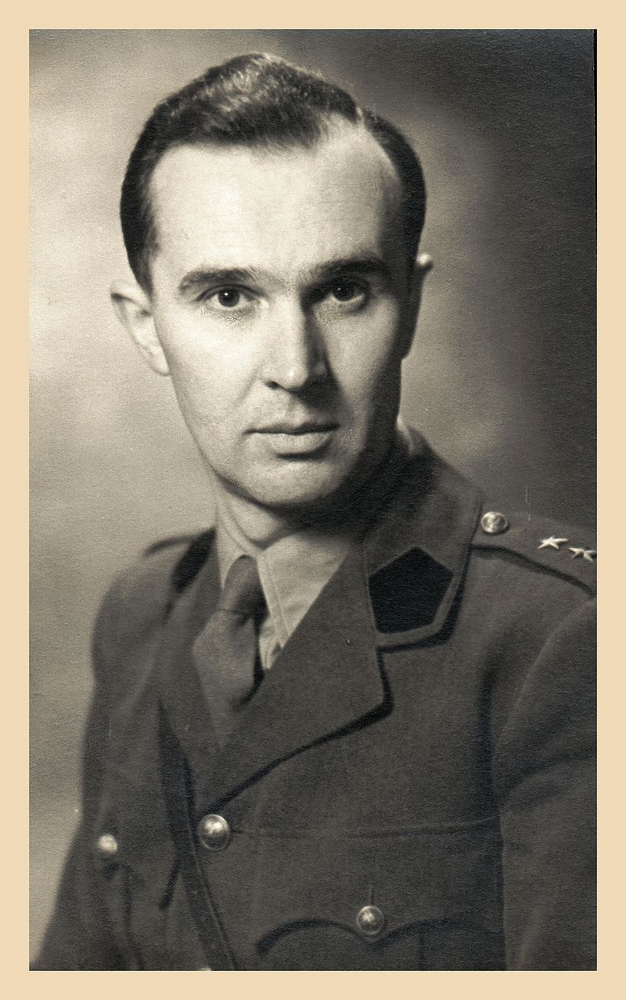
(바츠워프 스트루신스키. 전후에는 당연히 소련 치하의 고국으로 돌아가지 않고 영국에서 살았으며, 말년에는 캐나다로 이민가서 거기서 노후를 보내다 천수를 누리고 사망.)
그렇게 영국 정보부가 애써 빼온 인재다보니, 비록 전쟁 난민이긴 했지만 스트루신스키는 영국에 도착하자마자 영국해군 통신학교(Admiralty Signal Establishment)에 연구원으로 취업. 그런데 여기에 취업하자마자 영국 정보부가 제대로 된 인재를 빼왔다는 것을 입증. 지난 편에서 언급한 허프더프(Huff-Duff)의 2가지 문제에 대한 개선 작업에 착수하여 성과를 낸 것. 지난 편에서 설명했듯이, 허프더프도 기본적으로는 loop 안테나의 원리를 이용한 것이다보니 전파가 30도 방위각으로부터 날아올 경우 허프더프의 스코프 화면에는 30도와 함께 30 + 180 = 210도 방향으로도 똑같은 강도의 신호가 나타남. 그러니 그 전파를 발신하는 U-boat가 30도 쪽에 있는지, 정반대인 210도 방향에 있는지는 정말 구별할 수가 없었음. 스트루신스키는 이 문제의 해결을 위해 허프더프 안테나의 꼭대기, 파장의 1/2 거리에 추가로 sense 안테나 (굳이 번역하자면 감지 안테나)를 달았음. 이 센스 안테나라는 것은 뭐 특별한 안테나가 아니라 그냥 평범한 비지향성(omni-directional) 단극 안테나(monopole)였음. 중요한 것은 거기서 수신되는 신호의 처리. 즉 이 센스 안테나에 수신되는 신호와 허프더프의 90도로 교차되는 한 쌍의 루프 안테나에서 수신되는 신호를 벡터 합산(vector summation)함. 이렇게 하면 이 신호가 심장 모양의 방사형 패턴(cardioid radiation pattern)을 만들어 내면서 전파 발신원이 30도 방향인지 210도 방향인지 구별할 수 있게 해주었음.
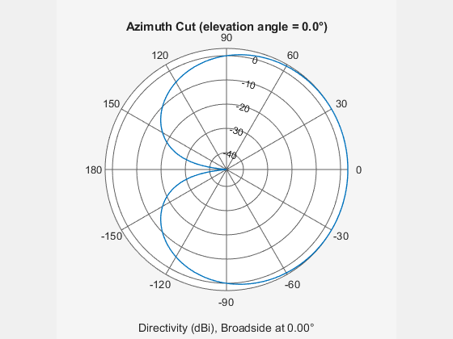 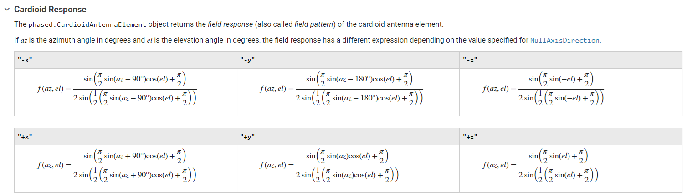
(아마 위의 설명만 읽고는 대체 센스 안테나에서 포착되는 신호와 허프더프 안테나의 신호를 벡터 합산할 때 어떻게 전파 방향을 구별할 수 있다는 것인지 이해가 안 갈 것임. 그게 정상임. 대부분의 문헌에서는 저 cardioid radiation pattern에 대해서는 추가 설명을 안 해줌. 그 이유는... 수학적으로 매우 어렵기 때문. 이 그림은 전파 방향 탐지에 사용되는 cardioid 안테나 신호 처리에 대한 수학적 계산 방법을 보여주는, MatLab이라는 소프트웨어 제품의 매뉴얼 일부.)
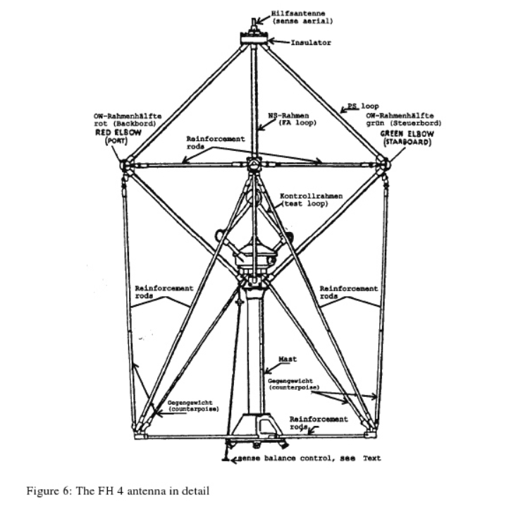
(스트루신스키에 의해 고안된 군함용 허프더프 안테나의 구조. 핵심은 다이아몬드 모양을 이루는 빗면 막대기들. 나머지 막대기들은 안테나가 아니라 그냥 기계적 지지를 위한 그냥 막대기임. 그리고 한쌍의 다이아몬드형 루프 안테나 위에 달린 한 개의 수직 막대기가 센스 안테나.)
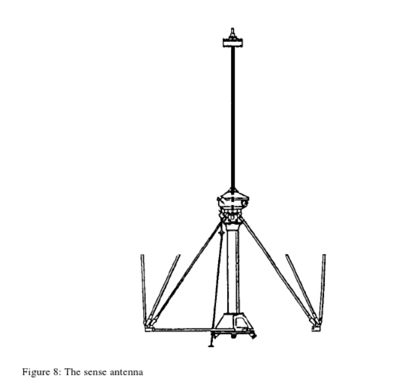
(군함용 허프더프 안테나의 꼭대기에 달린 센스 안테나를 따로 그린 그림.)
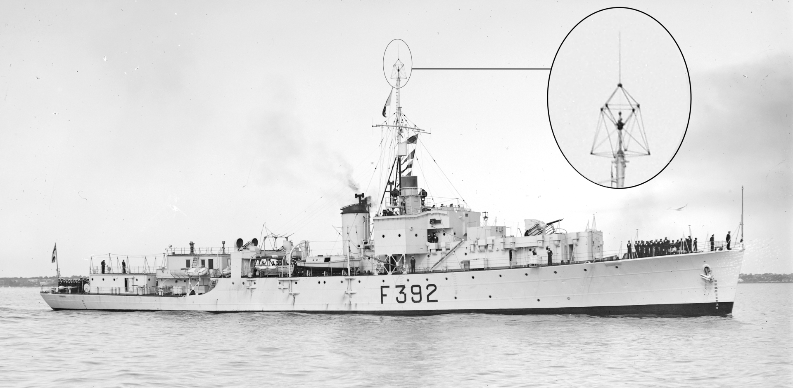
(이건 WW2 이후 파키스탄 해군 프리깃함의 꼭대기에 달린 허프더프 안테나의 모습. 한쌍의 다이아몬드 루프를 이루는 안테나 부분과 그 위의 센스 안테나가 잘 보임.)
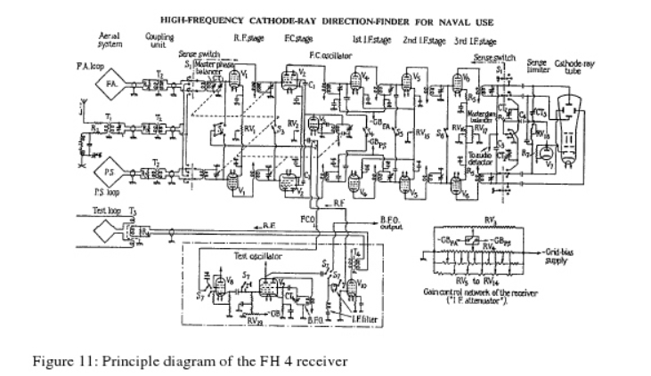
(허프더프의 핵심인 신호 처리 회로도. 비전공자인 우리는 그냥 안테나 모양만 보는 것이 좋음. 포기하면 편함.) <사람을 갈아넣는 솔루션> 전에 언급했듯이 허프더프를 군함에 설치해보니 생기는 두 번째 문제는 강철로 만들어진 군함의 불규칙한 상부구조물(superstructure)에 반사되어 들어오는 전파 때문에 잡음이 너무 심했다는 것. 요즘처럼 상부구조물 자체를 단순화하여 반사파를 최소화하여 반사파를 줄이거나 아예 일정 방향으로 튕겨버리는 식의 솔루션은 생각할 수가 없었음. 이미 전쟁은 시작되었으니 이미 취역한 군함들로 전쟁을 치러야 했고, 또 당시 군함의 상부구조물도 다 이유가 있어서 그렇게 만든 것이기 때문.
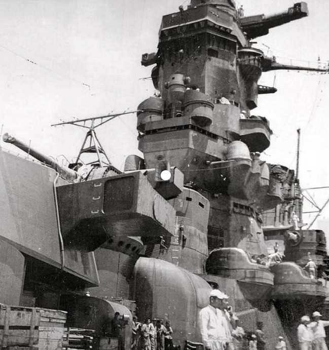
(일본해군 전함 무사시의 상부구조물)
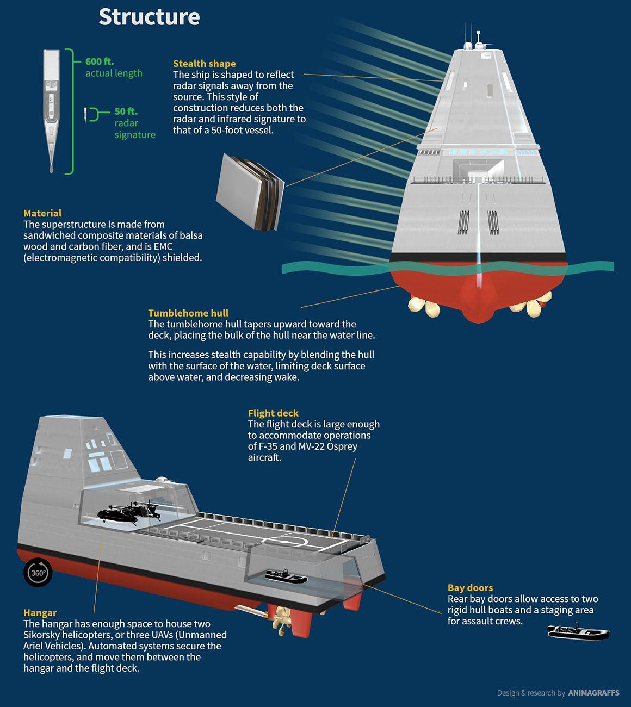
(스텔스 특성을 최대한 고려한 Zumwalt급 구축함의 상부구조물. 그러나 대표적인 실패작으로서 32척 계획되어 딱 3척 만들고 다 취소시킴.) 폴란드에서 온 난민... 아니 귀인인 스트루신스키로서도 이 문제는 정말 해결 방법이 마땅치 않았음. 군함 상부구조물을 전파를 잘 반사시키지 않는 나무나 고무 등으로 덮는 방법은 아예 고려하지 않았음. 군함이 하는 일은 적에게 대포를 쏘는 것이기도 하지만 그러자면 적의 대포와 폭탄으 얻어맞는 일이기도 하기 때문. 그런 군함 상부구조물에 인화성 나무나 고무를 덮는 것은 자살 행위이기도 하고, 그 무게만큼 군함의 안정성과 속력 저하를 부르는 바보짓. 결국 스트루신스키가 만들어낸 솔루션은... 그야말로 노동 집약형 솔루션. 즉, 군함마다 제각각 상부구조물의 모양이 다르니까, 그 군함마다 테스트를 통해 허프더프에 수신되는 반사파 데이터를 수집한 뒤 그 데이터에 따라 군함마다 제각각 각도에 따른 보정치를 일일이 적용한 것. 그러니까 어느 특정 군함에 설치된 허프더프는 그 군함에 설치할 때 꽤 오랜 기간 테스트와 튜닝을 거쳐야 했고, 그 결과 오로지 그 군함만에서만 제대로 작동하는 허프더프가 되는 것.
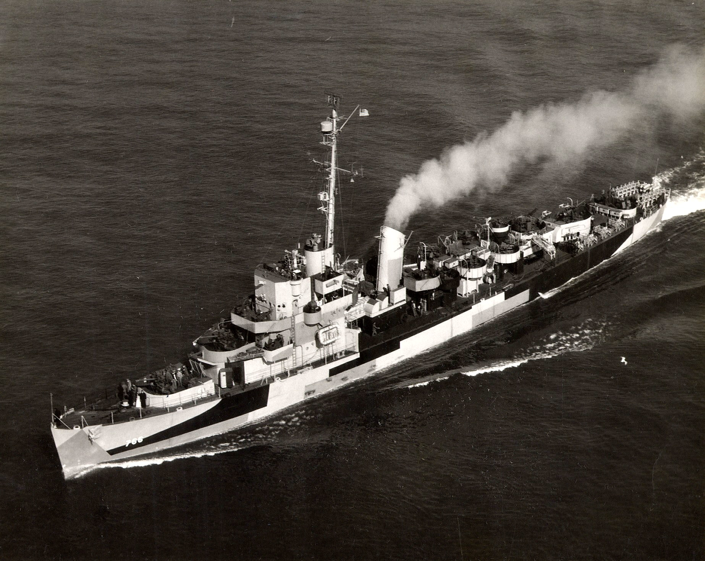
(호위구축함 USS Slater (DE-766, 1200톤, 21노트). 원래 구축함은 30노트 후반대의 고속으로 달리는 쾌속선이어야 했으나, 대서양 보급로의 느린 수송선단을 호위할 때는 어차피 수송선단 속도에 맞춰야 했으므로 굳이 그렇게 빠를 필요가 없었음. 그래서 경제성을 생각하여 엔진과 무장을 수송선단 호송용 대잠용 전용으로 만든 것이 호위구축함. USS Slater는 지금은 박물관 군함이 되어 있음.)
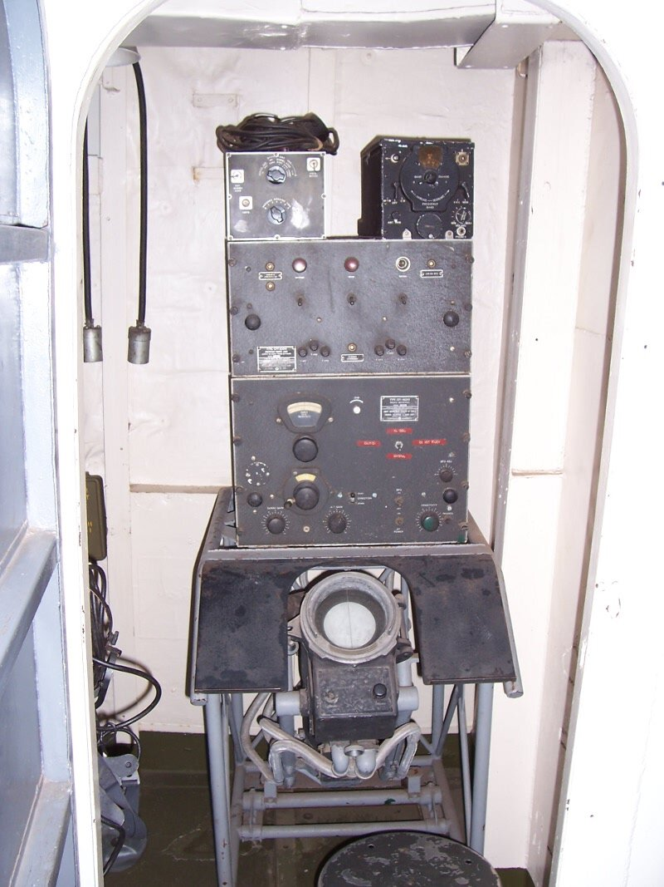
(호위구축함 USS Slater에 장착된 Huff-Duff. 아무리 싸구려 호위구축함이라고 해도 대잠전에는 진심이었으므로 꽤 장시간 테스트와 튜닝 작업을 거쳐 허프더프를 설치했음.)
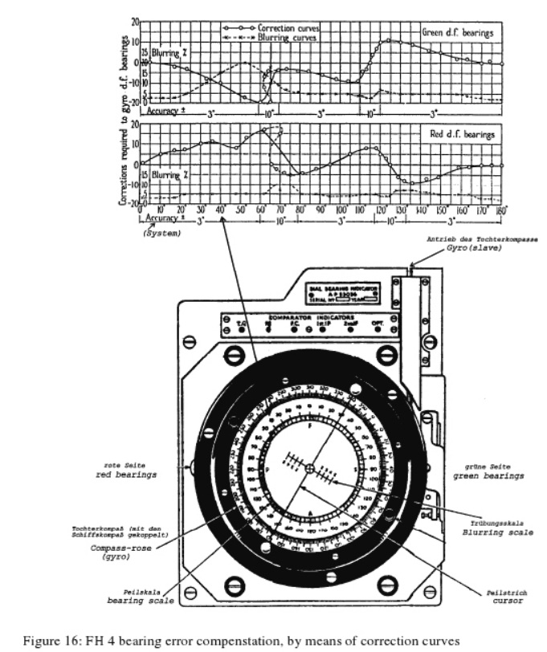
(허프더프의 스코프와 그 가장자리에 설치된 방위각 다이얼, 그리고 거기에 대한 보정치 그래프.) <허프더프에 대한 독일 유보트의 대응책> 이렇게 연합군 해군 함정에 허프더프가 설치되어 활용되자 유보트들의 피해가 급증. 허프더프의 원리를 제공한 왓슨-왓 박사의 번개 탐지기에 대해서는 전에 설명했듯이 공개 논문에 다 공개되어 있었고, 심지어 당시 영화관에서 틀어주던 뉴스 필름 (예전 우리나라 극장에서도 해주던 '대한뉴스' 같은 홍보 뉴스)에서도 공공연하게 떠들었던 것인데, 독일해군 사람들은 영화를 안 보는지 놀랍게도 유보트들의 피해가 급증하는 와중에도 독일해군은 허프더프에 대해 전혀 눈치채지 못함. 결국 20초 정도에 불과한 자신들의 일일 보고용 짧은 전파 발신에 대해서도 정확한 방향 탐지가 가능한 장치를 연합군이 만들어 낸 것이 틀림없다고 독일해군이 결론 지은 것은 1942년 말 ~ 1943년 초. 독일해군은 대응책에 골머리를 앓음. 그리고 놀랍게도 불과 몇 개월 안에 대응책을 만들어냄. 바로 Kurier 시스템. 쿠리어(Kurier)라는 것은 글자 그대로 전령이라는 뜻인데 영어나 불어로도 Courier임. 이건 사진 자료가 남아있지는 않은데, 금속제 원반의 테두리에 작은 금속봉을 일정한 간격으로 부착하여 모르스 부호를 구성한 뒤, 그 원반을 전기 모터로 재빨리 회전시켜 그 금속봉이 일으키는 전자기장의 변화를 자기 테이프 헤드 같은 감지기가 읽어내어 무전기에서 전파로 발신하는 것.
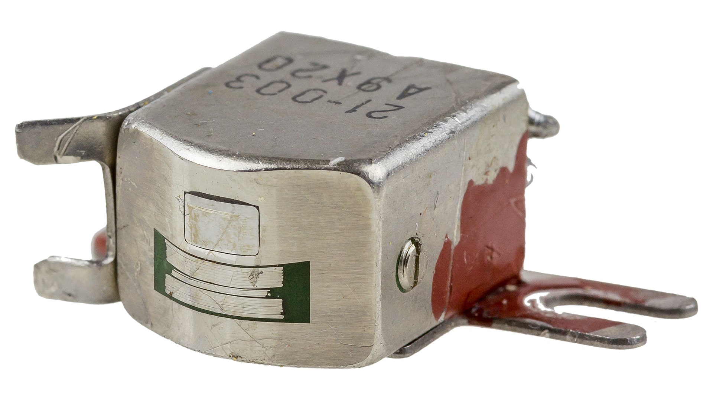
(예전에는 음악을 저런 자기 테이프, 그러니까 카셋 테이프에 녹음해서 들었는데, 그 자기 테이프를 읽어내던 것이 저런 테이프 헤드. 한동안 쓰다 보면 저 테이프 헤드 장치 표면에 산화물 먼지 같은 것이 끼었으므로 정기적으로 닦아주지 않으면 음질이 좀 떨어졌음.)
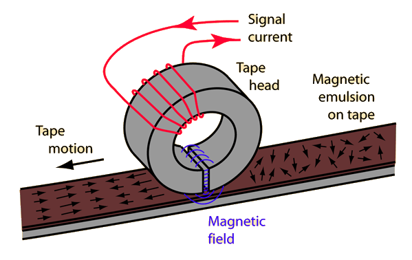
(자기 테이프에 데이터를 읽고 쓰는 테이프 헤드의 원리. 자세히 보면 저 테이프 헤드는 끝이 갈라져 있음.) 요약하면 사람이 손으로 모르스 타전기를 두들겨 보내던 것을 이젠 금속판에 미리 금속봉으로 표시해둔 뒤 전기 모터를 이용해 빠른 속도로 보내는 셈. 이렇게 보내니 일일 보고를 위해 걸리던 무전 송신 시간이 20초에서 불과 454ms, 그러니까 0.454초로 대폭 줄어듬. 이 정도면 허프더프조차도 거의 감지할 수 없는 수준. 그러나 이 기술의 개념은 좋았으나 워낙 정밀한 기계적 전기적 장치가 필요했으므로 실제 구현에는 여러가지 문제가 있었음. 가령 독일 연구실에서는 잘 되던 것이 실제 유보트에 설치해서 테스트를 해보니 잘 되지 않았는데, 이유는 습도와 온도가 높은 유보트 내부의 환경으로 인해 정밀 전기 모터의 회전 속도가 연구실과는 달랐기 때문. 이런 세부적인 기술적 문제를 하나씩 해결하다보니... 1945년이 훌쩍 지남. 결과적으로 이 쿠리어 시스템은 전쟁이 끝날 때까지 완전히 자리를 잡지 못함.